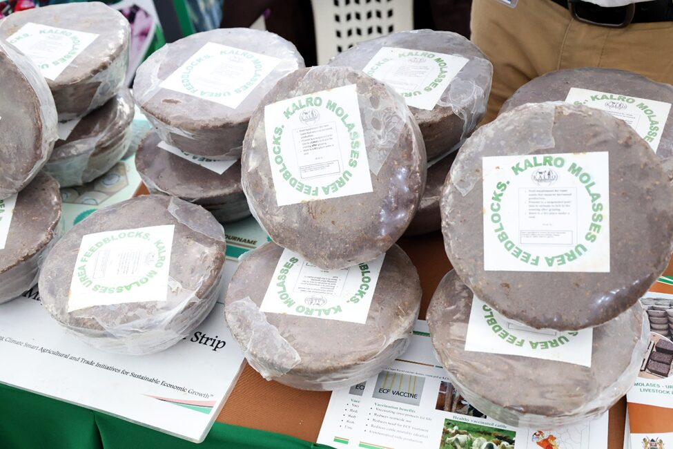
Company News
How KALRO’s Molasses-Urea Feed Blocks are Giving Livestock Farmers New Hope
The Kenya Agricultural and Livestock Research Organization (KALRO) is a government institution in Kenya tasked with conducting research and development activities aimed at enhancing agricultural and livestock productivity and sustainability in the country.
KALRO’s primary mission is to generate and promote knowledge and appropriate technologies to enhance agricultural and livestock productivity, value addition, and sustainable resource management.

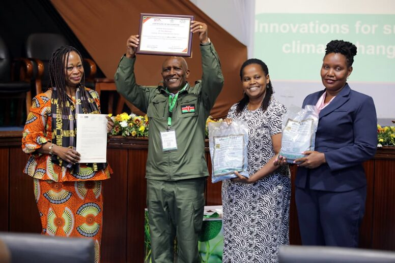
Explore our farm, livestock, crops, feeds, seeds and agricultural products through our photo gallery.
Explore Our Gallery →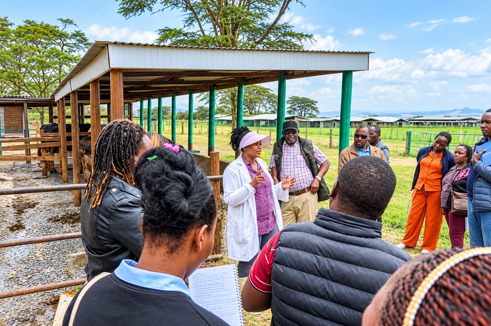
Quality livestock, animal feeds, seeds and agricultural products available from KALRO Farm Naivasha.
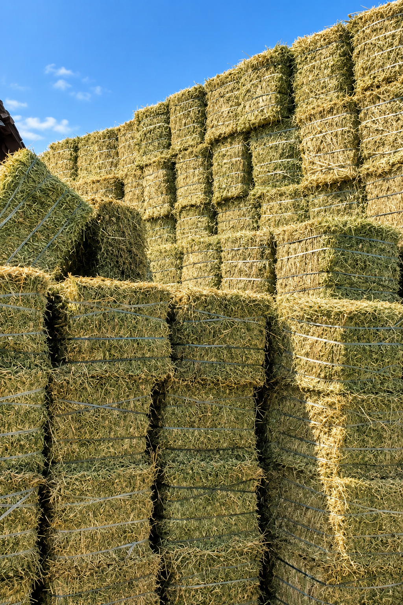
Lucerne, Boma Rhodes, barley, silage and molasses available in bulk.
↗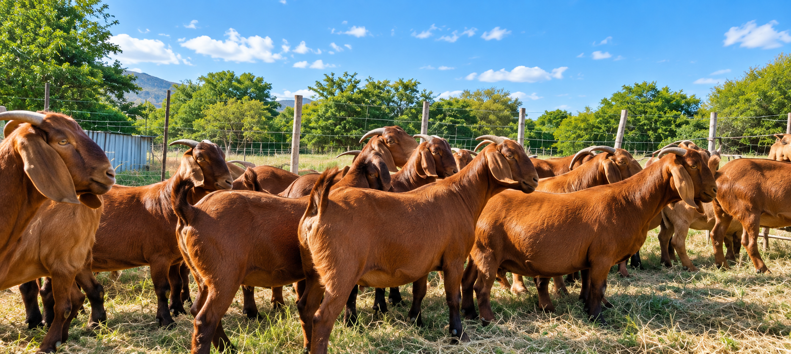
Fast-growing and hardy Red Kalahari goats available at KALRO DRI Naivasha.
↗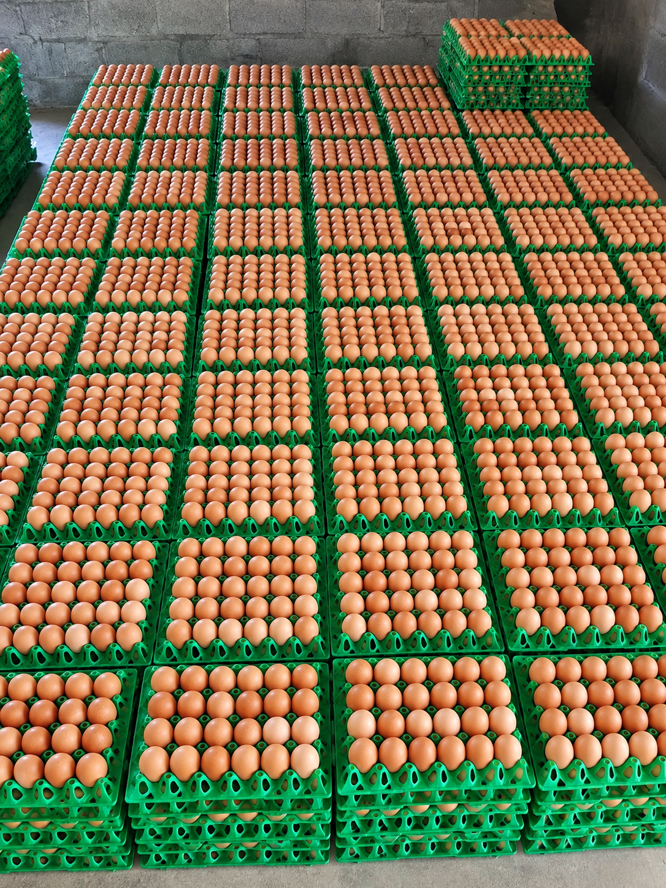
Wholesale eggs available in different sizes including Kienyeji and fertilized eggs.
↗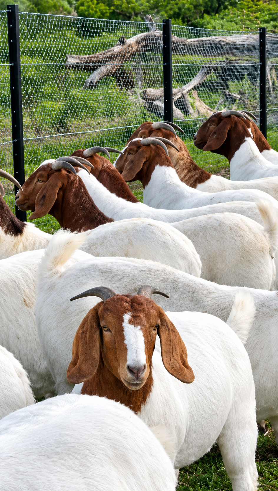
Quality Boer goats from KALRO Farm Naivasha.
↗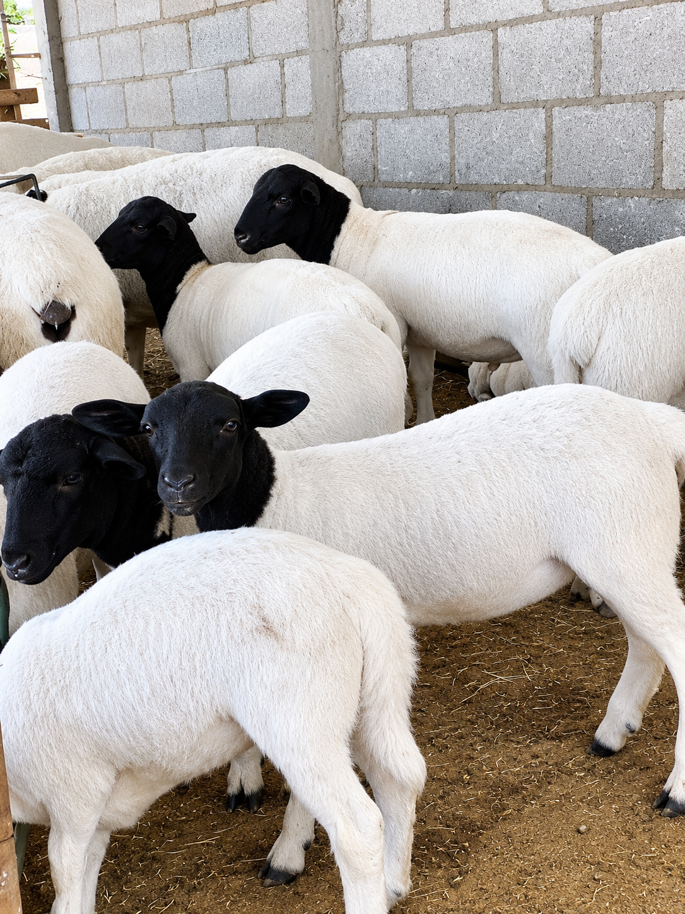
Pure Black Head Dorper sheep including lambs, rams and ewes.
↗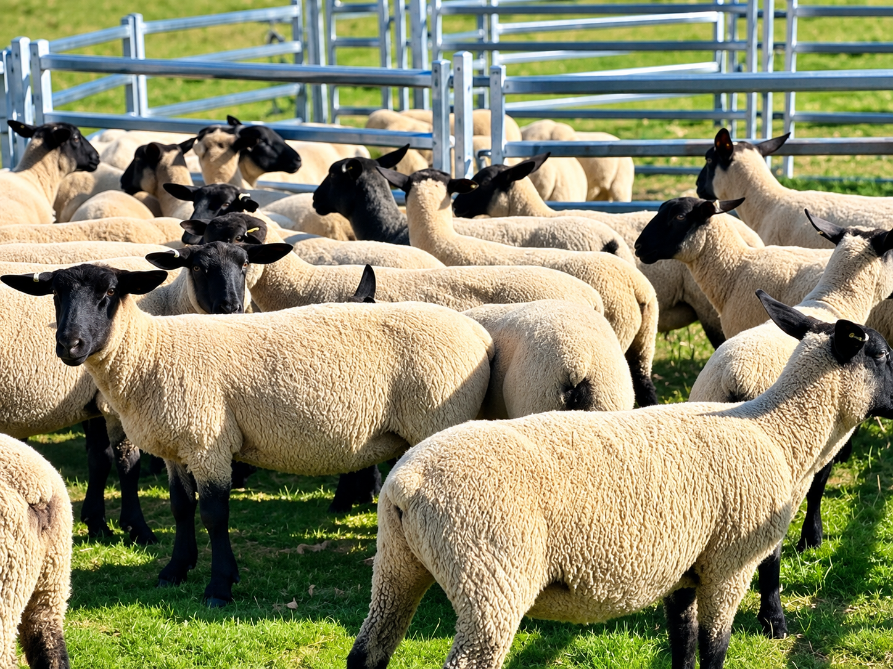
Hampshire lambs, breeding rams, pregnant and lactating ewes.
↗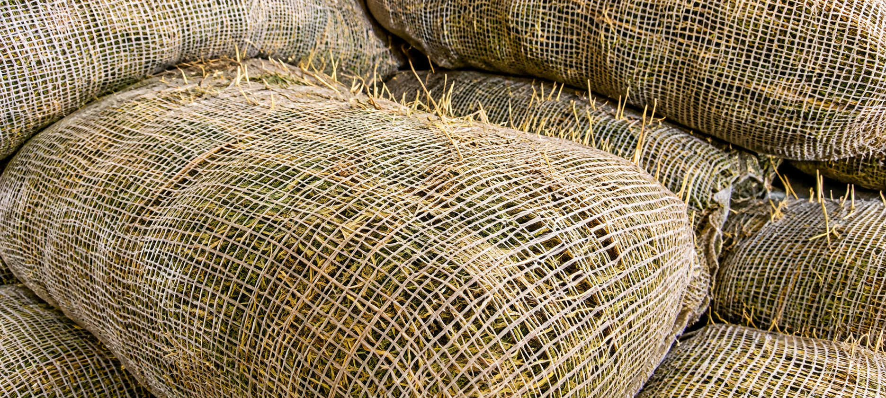
Certified potato seed varieties including Shangi, Super Shangi, Unica and others.
↗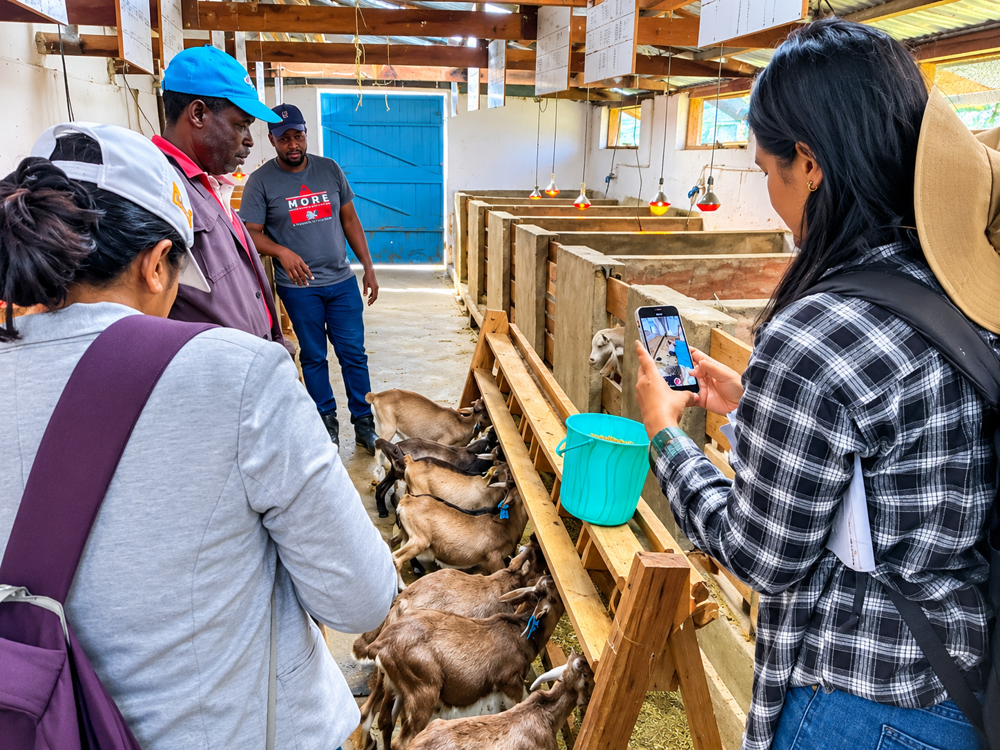
Dairy goats available for farmers interested in milk production.
↗